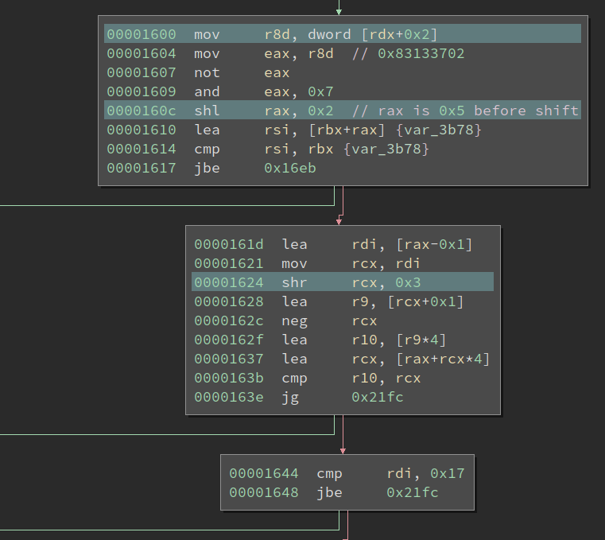

15 minutes
Solving a VM Challenge Using BinaryNinja
Recently, my friend Towel created a VM challenge. I have not done any VM crackmes in the last year and decided to try this one. Towel says the challenge should be easy and serves mostly as an introduction for VM crackmes. More importantly, this one has no anti-debugging or static obfuscation, to allow the solver to concentrate on the VM itself.
Preliminary
The main() function is actually quite simple:
Just one function call and a branch, which decides if the player succeeds. The core function looks like what a VM should be:
It has a dispatcher at the top-center of the graph, and various VM instruction handlers beneath it. We see most of the instructions are not complex (supposedly), except for the longer four ones at the left hand. Looking at the first basic block in the function quickly reveals some important information about the VM:
The code first sets up a huge buffer on the stack and then copies 0x3b1a bytes of data from address 0x3008 into it. Upon further inspection, I decided this is the actual VM code. Then it clears 32-byte spaces at the top of the stack. I did not know what it is at the moment, since it could be RAM or registers for the VM. Anyways, let us proceed to the first VM instruction and its handlers.
Analyzing the First VM Instruction
The start of the common handler reads one byte from the current VIP (VM IP) and goes to different handlers based on its value. It serves as an opcode (operation code) for the instruction. The opcode of the first VM instruction is 0xf6, and we can find its handler according to the value:
Looking at the handler, it reads another byte right after the opcode byte and checks whether the lowest two bits of it is 0x0. If so, it goes into the left branch in the image. We call this byte sub-opcode byte because it determines which variant of the opcode to execute. Then it has two shr instructions followed by two and and mov. It is not immediately clear to me what it is doing at first sight.
Upon closer inspection, I find if we treat the data at the top of the stack (address rsp) as an array of dwords, then the two mov essentially moves a dword from index rcx into index rax. And tracing back, we find the two values come from the sub-opcode byte. The source index comes from bit 7-8 of it, and the destination index comes from bit 5-6. Remember the lowest two bits of the sub-opcode byte are used to decide the opcode variant.
Now it is pretty clear that this is moving values between VM registers. (Well, it could also be VM memory, but this does not make a big difference.) This instruction can be disassembled something like mov r1, r3, for example. Of course, the actual indices of the registers need to be parsed from the sub-opcode byte.
Alright, what about the other sub-opcode? I.e., when the lowest two bits of the byte is 0x2. It reads a dword after the sub-opcode, and moves that into a register decided by the bit 5-6 of the sub-opcode. Here, since both instructions are encoding registers using two bits, I deduced that this VM has four registers.
Nice, we analyzed one VM instruction. Now we simply need to repeat the process for every VM instruction and will eventually complete it. However, the VM code is quite lengthy (0x3b1a bytes long), manually analyzing it is hopeless. We need some way to automate the process.
Writing an Architecture Plugin in BinaryNinja
This time I decided to write an architecture plugin in BinaryNinja to disassemble the VM. I have been using BinaryNija for several years, but I have not written any architecture plugins before. Previously, I wrote my recursive descent disassembler for VMs. It requires the user to write a disassembler function for the custom architecture, and it will drive the disassembler, i.e., fetch the binary code, ask for disassembly, and then print it.
However, writing an architecture plugin in BinaryNinja is a more powerful solution. Firstly, it benefits from a great GUI that I am already familiar with. I get a decent graph view, register highlighting, cross-references, etc, for free. Secondly, if we lift it to BinaryNinja IL, we can almost forget that we are dealing with an alien architecture – just read the BLIL and analyze it from there.
Andrew has done a tutorial on writing new architecture plugins, which I followed as I set up the initial code.
Basics of Architecture Plugin
Writing a new architecture plugin turns out to be quite simple: one simply sub-classes Architecture, and then register() it. After that, in the GUI, we can create a function in the new architecture. Since Andrew’s blogpost can already serve as a walk-through, so I will not cover every detail here. Instead, I will just describe some of my feelings and thoughts about the process.
Most of the work needs to be done are implementing two functions of the new architecture: get_instruction_info() and get_instruction_text(). get_instruction_info() returns the length of the instruction, branches (if any) after the instruction, etc. It will help BinaryNinja disassemble the function and draw the graph of basic blocks. get_instruction_text() returns to tokens of the instruction, which will be displayed as the disassembly. There is another function get_instruction_low_level_il(), which allows the instruction in the architecture to be lifted to LLIL. Then BinaryNinja will then lift it to MLIL and HLIL, do lots more analysis, and produce a decompiler output eventually. In this VM example, since the disassembly is already quite straightforward to read, I did not lift it to LLIL.
Let us go back to the first VM instruction and see how we handle it in the architecture plugin.
def get_instruction_info(self, data, addr):
result = InstructionInfo()
opcode = data[0]
byte1 = data[1]
if opcode == 0xf6:
if byte1 & 3 == 0:
result.length = 5
elif byte1 & 3 == 2:
result.length = 6
Right, since this one does not affect the control-flow, we simply need to return the instruction length of it. This VM happens to use the rdx register to store the VMIP, so tracking its value change can tell us the instruction length. One interesting part of this VM is NOT all bytes in an instruction is necessarily used for encoding. Sometimes, it wastes several bytes for nothing. I guess the purpose of this is to confuse the reverser. For disassembly, it is slightly more complex:
def get_instruction_text(self, data, addr):
instrLen = 0
tokens = []
opcode = data[0]
byte1 = data[1]
if opcode == 0xf6:
if byte1 & 3 == 0:
instrLen = 5
tokens.append(InstructionTextToken(InstructionTextTokenType.InstructionToken, 'mov'))
tokens.append(InstructionTextToken(InstructionTextTokenType.TextToken, ' '))
reg0 = (byte1 >> 4) & 3
reg1 = (byte1 >> 6) & 3
tokens.append(InstructionTextToken(InstructionTextTokenType.RegisterToken, 'r%d' % reg0))
tokens.append(InstructionTextToken(InstructionTextTokenType.OperandSeparatorToken, ','))
tokens.append(InstructionTextToken(InstructionTextTokenType.TextToken, ' '))
tokens.append(InstructionTextToken(InstructionTextTokenType.RegisterToken, 'r%d' % reg1))
elif byte1 & 3 == 2:
instrLen = 6
tokens.append(InstructionTextToken(InstructionTextTokenType.InstructionToken, 'mov'))
tokens.append(InstructionTextToken(InstructionTextTokenType.TextToken, ' '))
reg0 = (byte1 >> 4) & 3
tokens.append(InstructionTextToken(InstructionTextTokenType.RegisterToken, 'r%d' % reg0))
tokens.append(InstructionTextToken(InstructionTextTokenType.OperandSeparatorToken, ','))
tokens.append(InstructionTextToken(InstructionTextTokenType.TextToken, ' '))
int0 = int.from_bytes(data[2:6], byteorder='little')
tokens.append(InstructionTextToken(InstructionTextTokenType.IntegerToken, '0x%x' % int0, int0))
return tokens, instrLen
The disassembly is made up of several tokens. The reason to use different types of tokens is to inform the UI of its purpose, which can then provide better support. For example, when we use RegisterToken in the disassembly, and we select one of them, all register tokens with the same text will be all highlighted. This allows us to track the data flow faster.
Also, even one does not wish to spend time on creating these tokens, he can simply use a TextToken to hold all the token texts. That means my disassembler should retire because it is completely superseded by using the BinaryNinja architecture plugin.
From here we repeat the process and disassemble all instructions one by one. In BinaryNinja, we can easily see what is the bytecode of the next unhandled instruction, which is quite convenient to speed up the development loop.
Analyzing the Algorithm
I did not wait until I finish every instruction to start analyzing the algorithm. The first three VM instruction already gives me something meaningful:
We see that r0 is 0x20 after the subtraction, and then it writes it to the terminal. The ASCII 0x20 corresponds to the space char. So these three instructions print space to the terminal. This process is repeated lots of times:
What is it doing? Well, it just prints the text we see when we execute the binary:
$ ./KataVM_L1
.-------------------------.
| Towel's KataVM: Level 1 |
'-------------------------'
>>
Well, yeah, it prints a banner and then asks for the input. So we do not bother analyzing these instructions, because we know their effect. Let us see what happens after the prints:
It first sets r2 to 4, and reads 4 bytes of input into both r0 and r1. Note in this VM, the bytes to read are decided by the second parameter of the read() call, in this case being 4. Next, it copies the input in r1 into r2 and r2, and does some shift, add, and xor on it. This looks like the TEA algorithm, isn’t it?
A COMPLEX VM Instruction
The next VM code I encounter is the hardest one in this VM. It has four sub-opcode, and all of them look similar.
Even if I probably only need to analyze one of them, it is still quite complex. I first read its disassembly, but I quickly get lost. However, I do see some patterns within it. Let us look at the left-most sub-opcode, and the red block in the middle is always executed. And the code on top of it and beneath it also looks similar to each other. So it means maybe I only need to understand one of the two, drastically lowering the workload.
Also, at the bottom of the handler, we see this interesting block:
It is using the SSE instruction pshufd to reorganize the four dwords at address rsp and rsp+0x10. At first sight, this is more confusing than revealing. I thought this VM has four registers, which means four dwords. They are 16 bytes in total and span from rsp to rsp+0x10. Then what the heck is this code doing when it transforms the four dwords starting at rsp+0x10, is it just trying to confuse me?
Well, let’s first figure out what it does to the four registers sorted at rsp. We know pshufd transforms the second operand according to the third operand (which is an 8-bit immediate), and stores the result in the first operand. And what does the third parameter, 0x1b corresponds to? It is actually 0b00011011 in binary, or 00 01 10 11 when put into groups. Wow, so the pshufd will swap the first dword with the last one, and the second one with the third one. Nice, this makes sense!
Now we still need to read the bulky part of the handler.

At the beginning of it, it first reads a dword after the sub-opcode byte. Then it does some length-based comparison based on that value. I did not make sense out of it initially, but when I zoom out, I discovered a new pattern:
There are two loops in it. And the smaller one looks like this:
It is just copying dwords from one pointer to another pointer until the two-pointer converges. Well, it seems to be reversing all of the dwords between two pointers. Looking at the larger one, it appears to be doing the same thing, just using SSE instructions to handle more data at the same time, to run it faster:
Suddenly, the length comparison, as well as the two loops that does the same thing start to make sense to me! It is trying to reverse the dwords, but it will first use the SSE version when the buffer is large, then use regular instructions to wrap up. It is similar to the handling in SSE version of string functions, e,g., strcpy.
Nice progress! The next thing I discover is that no arithmetic computation is performed on the data, they are just moved from one place to another. Given all this information, I fired up gdb to see what it is doing.
The VM instruction I followed reads out a parameter from the dword after sub-opcode. The parameter has a value 0x5. The instruction breaks up the 8 dwords start at rsp into two groups, with the first group being the first 6 dwords, while the other being the rest 2 dwords. It then reverses the position of the dwords WITHIN the two groups, respectively. If you use an integer to represent the location of the dwords, it works like this:
Start
0 1 2 3 4 5 6 7
Group 1
0 1 2 3 4 5 ==> 5 4 3 2 1 0
Group 2
6 7 ==> 7 6
End
5 4 3 2 1 0 7 6
So far, no magic, right? Then it reverses the orders of the first four dwords, and the last four dwords, respectively:
Start
5 4 3 2 1 0 7 6
Group 1
5 4 3 2 ==> 2 3 4 5
Group 2
1 0 7 6 ==> 6 7 0 1
End
2 3 4 5 6 7 0 1
If we put the start and end together, we can see it clearly:
Start
0 1 2 3 4 5 6 7
End
2 3 4 5 6 7 0 1
Equivalently, the dwords are rotate shifted right 6 times! Wow, how smart a way to do it! I did not work out the mathematics behind this transformation, though I would expect it to be simpler than reversing this function.
From here, I realize one of the three similar handlers does shift left in the same way. And the other two reads the number of cells to shift from a register. Great, we now fully reverse-engineered and understood the VM!
Is it TEA?
Looking at the code and comparing it with a reference implementation (shown below, excerpted from Wikipedia), I believe it must be TEA. The registers are being rotated but if we track it precisely, we see those are just obfuscations. Everything matches except the delta is 0xe09ffbb1, not 0x9E3779B9. But that does not make a big difference to the algorithm. Also, the VM code is 32 rounds of unrolled loops. The entire program reads 16 bytes of input, and every 8 bytes are processed in the same way.
void encrypt (uint32_t v[2], const uint32_t k[4]) {
uint32_t v0=v[0], v1=v[1], sum=0, i; /* set up */
uint32_t delta=0x9E3779B9; /* a key schedule constant */
uint32_t k0=k[0], k1=k[1], k2=k[2], k3=k[3]; /* cache key */
for (i=0; i<32; i++) { /* basic cycle start */
sum += delta;
v0 += ((v1<<4) + k0) ^ (v1 + sum) ^ ((v1>>5) + k1);
v1 += ((v0<<4) + k2) ^ (v0 + sum) ^ ((v0>>5) + k3);
} /* end cycle */
v[0]=v0; v[1]=v1;
}
And the key appears to be:
uint32_t key[4] = {0x80b86e21, 0xa268295d, 0xf171f22d, 0x28a13c94};
After 32 rounds of encryption, the encrypted input is checked against two constants:
The fail = 0x1 means if the cmp returns not equal, the check fails.
Then I copied the reference decrypting code (from Wikipedia), changed the delta (and sum as well):
void decrypt (uint32_t v[2], const uint32_t k[4]) {
uint32_t v0=v[0], v1=v[1], sum=0x9E3779B9 * 32, i; /* set up; sum is 32*delta */
uint32_t delta=0x9E3779B9; /* a key schedule constant */
uint32_t k0=k[0], k1=k[1], k2=k[2], k3=k[3]; /* cache key */
for (i=0; i<32; i++) { /* basic cycle start */
v1 -= ((v0<<4) + k2) ^ (v0 + sum) ^ ((v0>>5) + k3);
v0 -= ((v1<<4) + k0) ^ (v1 + sum) ^ ((v1>>5) + k1);
sum -= delta;
} /* end cycle */
v[0]=v0; v[1]=v1;
}
Then I happily ran it, and believe I solved it. However, the decrypted one seems to contain unprintable char. And when I feed them in as input, the check also fails. Emmm, where did I make any mistake?
Checking Each Round One-By-One
I used the text 12345678 as input and compared the encryption result from TEA and the VM. The first several rounds all match, and I am tired of comparing them manually. One difficulty here is there is no way to set a breakpoint on the VMIP, we can only set up breakpoints on the VM handlers. So if we wish to compare the result after n rounds, it is not easy to set a breakpoint.
However, I made an observation that always ends up a swap registers VM instruction, and each round contains exactly four swap registers instructions. That makes the handler of that instruction a great place to set up a breakpoint. Set up a breakpoint at the end of the handler, when it hits, first use c to continue four times, and then dump the 8 dwords starting at rsp using d/8dx $rsp. I wrote a script to automate this process and dump the result, then compare it with the output from TEA.
I discovered the result from the 22nd round of encryption is different in two outputs. I browsed the code to do the 22nd round of encryption, and almost immediately saw the issue:
The number of shifts are different! They are 2 and 3 instead of 4 and 5. I adjusted my decryption code a little bit:
void decrypt (uint32_t v[2], const uint32_t k[4]) {
uint32_t v0=v[0], v1=v[1], sum=0xe09ffbb1 * 32, i; /* set up; sum is 32*delta */
uint32_t delta=0xe09ffbb1; /* a key schedule constant */
uint32_t k0=k[0], k1=k[1], k2=k[2], k3=k[3]; /* cache key */
for (i=0; i<32; i++) { /* basic cycle start */
if (i == 9)
v1 -= ((v0<<2) + k2) ^ (v0 + sum) ^ ((v0>>3) + k3);
else
v1 -= ((v0<<4) + k2) ^ (v0 + sum) ^ ((v0>>5) + k3);
v0 -= ((v1<<4) + k0) ^ (v1 + sum) ^ ((v1>>5) + k1);
sum -= delta;
} /* end cycle */
v[0]=v0; v[1]=v1;
}
Note, the decryption works in reverse, so the 22nd round in forwarding means the 9th round in reverse. Now it works! I get the output xNVa2_N07_t3aAlg, and it is correct:
$ ./KataVM_L1
.-------------------------.
| Towel's KataVM: Level 1 |
'-------------------------'
>> xNVa2_N07_t3aAlg
[+] Correct!